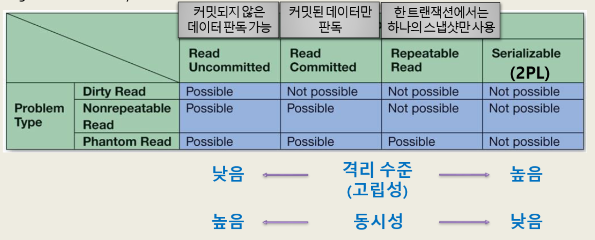

Database Administration
Terms
Data Administration: A management-oriented function that concerns corporate data privacy and security issues.
Database Administration: A technical function that is specific to a particular database, including application
Database Administrator(DBA): Person in charge of a database and facilitates the development of use of it
Database Administration Functions
Concurrency control
Ensuring that one user’s work does not inappropriately influence another user’s work
Strict concurrency controlrequireslockingthe database, 다른 사용자의 동시 사용 허가 xLower concurrency controlallowsmore throughput
Transactions
Users submit Transactions(LUWs)
Atmomic Transaction: 데이터베이스에서일련의 작업들이 모두 성공적으로 수행되거나,그렇지 않을 경우 작업이 전혀 수행되지 않아 데이터베이스가 변경되지 않는 상태를 유지하는 트랜잭션→ Before
committed, all LUWs must be successfully completed, orrollbackConcurrent Transactions: 여러 트랜잭션이 동시에 실행되는 것Lost update problem: 두 트랜잭션이 동시에 같은 데이터를 수정할 때, 하나의 트렌잭션이 다른 트랜잭션의 변경을 덮어쓰는 문제Inconsistent read problem: 한 트랜잭션이 데이터를 읽는 도중 다른 트랜잭션이 데이터를 수정하는 문제Dirty read: commit 되기 이전에 수정된 데이터를 읽는 것. 만약 rollback이 될 경우 문제가 발생.Nonrepeatable read: 데이터를 두 번 읽었는데 commit된 transaction 때문에 값이 다른 경우Phantom read: 데이터를 두 번 읽었는데 commit된 transaction 때문에 새로운 row가 추가된 경우
Resource lockingImplicit locks: DBMS가 자동으로 수행하는 lockExplicit locksLOCK TABLES table_name READ -- or WRITE UNLOCK TABLESExclusive locks: 다른 트랜잭션에서 읽기/쓰기 불가Shared locks: 다른 트랜잭션에서 읽기 가능, 쓰기 불가rock granularity:row-levelvstable-levelvsdatabase-level
Serializable Transactions: 가장 강력한 격리 수준 보장Two-pase locking(2PL):growing phase와shrinking phase로 나뉨
ACID TransactionAtomic: 성공한 transaction만 저장되어야 한다Consistent: 현재의 transaction이 마무리 되기 전 까지 record를 저장할 수 없다→ 트랜잭션의 살향 결과로 데이터베이스 상태가 모순되지 않음
Isolatedread uncommitted: 다른 트랜잭션에서 commit되지 않은 데이터도 읽을 수 있음read committed: 다른 트랜잭션이 commit된 데이터만 읽을 수 있음repeatable read: 한 트랜잭션에서 하나의 스냅션만 사용serializable: 가장 강력한 격리 수준 보장
Durable: 트랜잭션이성공적으로 완료되면, 그 결과는영구적으로 저장되어야 한다

Deadlock / deadly embrace
두 개 이상의 트랜잭션이 서로 unlock을 무한히 기다리는 상태
lock
optimistic locking- assumption:
No conflict will occur - if no conflict occurs, the transaction is
committedelse it isrolled backand repeated
- assumption:
pessimistic locking- assumption:
Conflict will occur lockthe data before the transaction starts
- assumption:
Cursor
A cursor is a pointer into a set of rows that are the result set from an SQL SELECT statement
DECLARE cursor_name CURSOR FOR SELECT column_name FROM table_nameBackup and recovery
Recovery
- via
Reprocessing - via
RollbackandRollforwardlog filetransaction을undo할 때,before-images가 존재해함. (rollback) transaction을redo할 때,after-images가 존재해함.(rollforward)
Security
only authenticated users perform authorized activities
Authentication:User ID와password를 사용하여 사용자를 인증Authorization:user groups(roles): dbcreator, public, …sql GRANT SELECT, INSERT, UPDATE, DELETE ON table_name TO user_name
Database Performance
- index
disk mirroring: 데이터 복제 말씀하신 듯- RAID
- SANs
Distributed database: service cluster partitioned replicated
DBA Responsibilities
- user reported errors를 모아서 system이 잘 돌아갈 수 있게 해야함
- database 설정을 잘 관리해야함
- 문서화 잘 해야함
- cloud로 db 관리(
service level agreement)